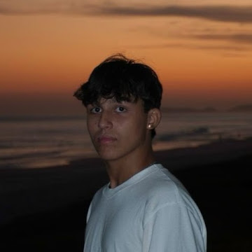

Olá, eu sou Luiz Fernando
Desenvolvedor Backend Java
Meu objetivo é agregar valor a projetos que tornem a vida das pessoas mais prática e simples, impulsionando simultaneamente o meu aprimoramento profissional.

Meu objetivo é agregar valor a projetos que tornem a vida das pessoas mais prática e simples, impulsionando simultaneamente o meu aprimoramento profissional.